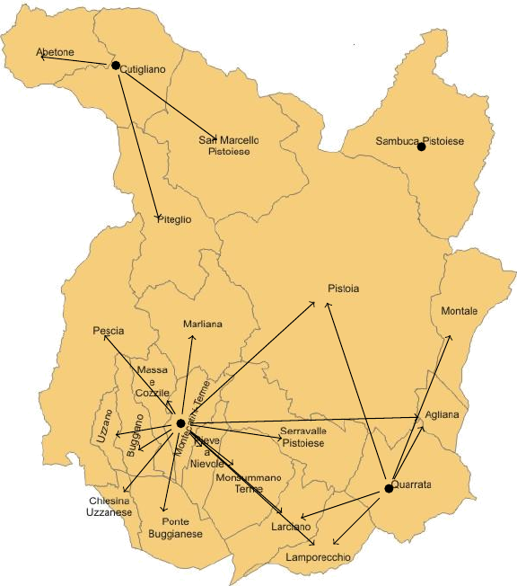
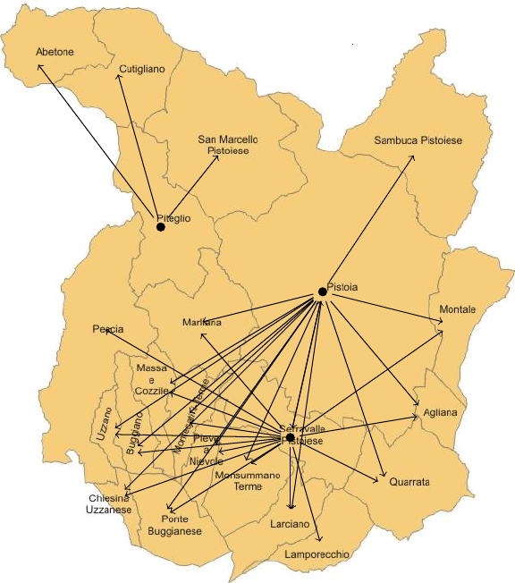
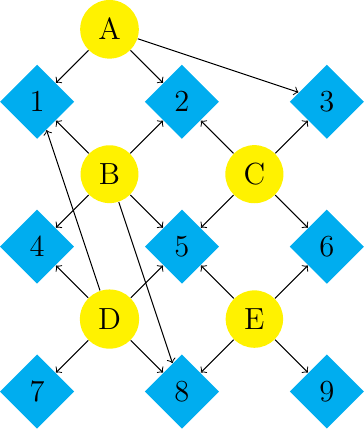

\(\newcommand{\R}{{\mathbb{R}}}\) \(\newcommand{\Z}{{\mathbb{Z}}}\) \(\newcommand{\N}{{\mathbb{N}}}\) \(\newcommand{\var}[1]{{\color{red}{\mathbf{#1}}}}\) \(\newcommand{\param}[1]{{\color{blue}{#1}}}\) \(\newcommand{\mathsc}[1]{{\normalfont\textsc{#1}}}\) \(\def\sc#1{\dosc#1\csod}\) \(\def\dosc#1#2\csod{{\rm{#1{\rm\small #2}}}}\) \(\newcommand{\set}[1]{{\sc#1}}\) \(\newcommand{\mathvar}[1]{\var{#1}}\) \(\newcommand{\half}{{\small{\frac{1}{2}}}}\)
22. Set covering, packing, partition¶
Problems in this section are widely used and give rise, in some application fields, to huge dimensional optimization problems. All these problems can be formalized as the choice of subsets of a ground set which satisfy some constraints.
The set covering problem is formally defined as follows: Consider a finite set \(\mathcal{S}\) and a collection of subsets:
A covering of \(\mathcal{S}\) with sets in the collection \(\mathcal{C}\) is defined as a set of sets \(C_{i_1}, \ldots, C_{i_h} \in \mathcal{C}\) such that
A packing is defined as a collection of pairwise disjoint sets:
A partitioning is a collection of subsets which is, simultaneously, both a covering and a packing. In other words, every element in the ground set is contained in one and only one of the sets of the chosen collection.
The formal definition perhaps does not allow to immediately appreciate the importance of these models. Some relevant applications will be presented later in this paragraph. We now present a formulation of the problem as an integer linear optimization model.
- model
Set Covering
\(\set{Requests}\): a set of requests which are to be covered;
\(\set{Resources}\): a set of potentially available resources
\(\set{Pairs} \subseteq \set{Requests} \times \set{Resources}\): a pair \((i, j) \set{Pairs}\), with \(i \in \set{Requests}\) and \(j \in \set{Resources}\), if and only if the activation of resource \(i\) is sufficient to cover the request \(j\). It is possible to think of this set as a set of arcs that connect requests and resources.
\(\param{Cost}_j\) the cost of activating resource \(j \in \set{Resources}\);
\(\mathvar{\delta}_{j}\): binary variable, with value one if and only if resource \(j \in \set{Resources}\) is avtivated;
Covering constraint: every request must be covered by at least an active resource:
\begin{align*} \sum_{j \in \set{Resources}: (i, j) \in \set{Pairs}} \mathvar{\delta}_{j}& \geq 1 & \forall \, i \in \set{Requests} \end{align*}
Minimization of the total activation cost:
\[ \min \sum_{j \in \set{Resources}} \param{Cost}_j \mathvar{\delta}_j \]
The model just seen corresponds to the formal definition of set-covering. In fact, the set \(\mathcal{S}\) in the abstract definition corresponds to the set \(\set{Requests}\); for what concerns the subsets, these are implicitly defined through the set of \(\set{Pairs}\):
The following is a possible implementation of the model, almost a verbatim copy of the above model:
set REQUESTS; # requests to be covered
set RESOURCES; # available resources
set PAIRS within REQUESTS cross RESOURCES;
param cost{RESOURCES} >= 0, default 1;
var delta{RESOURCES} binary;minimize Total_Cost:
sum {j in RESOURCES} cost[j] * delta[j];
subject to Covering{i in REQUESTS}:
sum {j in RESOURCES : (i,j) in PAIRS} delta[j] >= 1;
# to be done
As an example, we consider the application of this model to emergency planning.
- application
Localization of emergency facilities
In planning for emergency situation, it often happens that we need to decide the location of critical facilities in such a way that the population which might be affected by an emergency, will find the necessary equipment or the required support as close as possible. Examples concern the localization of fire stations to respond to large scale fires, the localization of parking places for ambulances, ready to serve nearby population, the choice of emergency inventories (for medicines, medical devices, protective devices, …). In these cases we can assume that the population is represented as a discrete set of nodes (cities, provinces, blocks in a city,…); the resources to be activated might be localized in another (possibly, in the same) set of nodes. Between any pair of population nodes and possible resource nodes, a closeness measure has been computed. As an example, given the location of each node, a shortest path model can be solved, for every origin/destination pair, to determine the travel length between the nodes. This length might be a mileage, or an average travel time. It is important to take into account that this computation might require more refined shortest path computations. E.g., in locating ambulances, one should compute not only the travel time from the ambulance parking to the request origin node, but also the travel time between that node and the closest hospital.
After this pre-processing step, we might consider a threshold on the maximum distance (in space or travel time) between a request node (a population) and a resource node. As an example, we might decide that no more than 20’ should be necessary to travel between a resource node and the request node. Given this threshold, we can state that a resource node covers a request node if the distance between the tow nodes is below this threshold. Given this, we usually look for the smallest number of resources to activate so that all request nodes are within the threshold maximum travel time from the closest activated resource node. In the example below ewe refer to a set of municipalities in the Tuscany region, and we consider all of them to be both a requesting node as well as a candidate location for a resource. The following data file, partially displayed, was used to generate the instance, which is based on official statistics on travel times and distance:
Pistoia.dat¶set NODES= Abetone Agliana Buggiano ChiesinaUzzanese Cutigliano Lamporecchio Larciano Marliana MassaCozzile MonsummanoTerme Montale MontecatiniTerme Pescia PieveANievole Pistoia Piteglio PonteBuggianese Quarrata SambucaPistoiese SanMarcelloPistoiese SerravallePistoiese Uzzano ; param: time distance:= Agliana Abetone 51.08 60508.98 Buggiano Abetone 59.25 67756.87 Cutigliano Abetone 12.67 13590.61 Lamporecchio Abetone 65.40 73209.48 Larciano Abetone 62.13 69603.33 Marliana Abetone 57.85 66273.10 MassaCozzile Abetone 60.56 69217.51 MonsummanoTerme Abetone 53.63 61924.66 Montale Abetone 54.04 58561.24 MontecatiniTerme Abetone 55.66 63960.11 Pescia Abetone 64.80 73076.57 PieveANievole Abetone 53.55 62708.61
In order to solve the problem we first need to define requests and resources and to connect them with arcs, if their distance is below the chosen threshold:
setCovering.run¶model setCovering.mod; set NODES ordered; set ARCS := NODES cross NODES; param time{ARCS}; param distance{ARCS}; param threshold; data Pistoia.dat; let REQUESTS := NODES; let RESOURCES := NODES; let threshold := 20; let PAIRS := {(i,j) in ARCS : time[i,j] <= threshold}; option solver gurobi; option omit_zero_rows 1;option omit_zero_cols 1; solve; display delta; display Covering.body; for {i in REQUESTS} display i,{j in RESOURCES: delta[j]==1 && (i,j) in PAIRS};
setCovering.jl¶# to be doneThe following picture graphically displays the solution obtained by running the model with threshold: 20’:

The next picture shows how the solution would change if the threshold was chosen as 25’:

A matrix formulation of the set-covering problem is easily obtained. In fact let \(A\) denote the adjacency matrix of the requests/resources pairs, i.e. a binary matrix whose generic element \(a_{ij}\) is 1 if and only if resource \(j\) covers the request of node \(i\).
Consider an instance of the set covering problem represented in the following figure:

In this figure, yellow circle nodes are potential resources, while light blue diamond nodes are requests and arcs connect feasible pairs. The adjacency matrix of this instance is
Reading this matrix by lines, we can immediately see, for example, that node 1 can be covered by resources A. B, D, while node 2 can be covered by A, B, C. Defining a vector of variables \(\mathvar{\delta}\), the problem can be formalized as
Set-covering problems, when analyzed as is usual in complexity theory, in the worst case, have an exponential computational complexity. No efficient algorithm is known to solve these problems efficiently. However it can be shown that the optimal (binary) solution is always a basic solution of the linear relaxation of the problem, i.e., a vertex of the linear relaxation of the problem. So it can happen, and indeed, in practice, it happens quite frequently, that the linear relaxation already generates the optimal binary solution or that, at most, a few iterations of the Branch and Bound method are sufficient. Thus, although theoretically very difficult, these problems, quite often, are easily solved in practice.
The bottleneck, in many case, is their huge size, which makes even the solution of the linear relaxation computationally hard. Frequently, set covering examples encountered in practical applications have millions of variables.
- application
Shift planning
One of the fields in which the set covering model finds its widest use is that of shift planning (for hospital staff, airline pilots, locomotives, etc.). In this case the needs to be covered are given by the number of nurses, pilots, locomotives respectively, which must be present in a given period of time on a date, at a location or on a given route. The resources available are given by possible shifts, seen as subsets of the set of needs. The greatest complexity of these models consists in the fact that often the number of different shifts is huge. These are all possible work/no work combinations which satisfy specific regulations (such as laws, union contracts, local preferences,…). In planning air personnel shifts, it is normal to have covering problems with many millions of variables. In the following example, we consider a generalization of the set-covering model, in which, for each requirement, a minimum request of employees is given; this request is not necessarily one as in the standard covering problem. Moreover, for each resource type, which in this case, represents a possible shift type, an integer number of resources might be chosen, not necessarily binary as in the standard set covering problem.
The code below implements these small variations:
shifts.mod¶set REQUESTS ordered; # requests to be covered set SHIFTS; # legal shifts param A{SHIFTS,REQUESTS}; #Shifts in rows, periods in cols param cost{SHIFTS} >= 0, default 1; param req{REQUESTS} default 1; var num{SHIFTS} integer, >= 0; minimize Total_Cost: sum {j in SHIFTS} cost[j] * num[j]; subject to Covering{i in REQUESTS}: sum {j in SHIFTS : A[j,i]==1} num[j] >= req[i];
shifts.jl¶# to be doneIt can be immediately seen that this model is pretty similar ot the set covering one. We decided to describe the feasible pairs (shifts - covered time slots) through the adjacency matrix instead of the usual list of pairs, for compactness reasons only.
The following file describes a realistic instance, inspired by a small healthcare facility, operating 7/24, with different requirements during different days and different parts of the day. Each day is divided into 4 time slots: 08-12, 12-16, 16-20, 20-08. A minimum request is given for each of these time slots. We assume here that feasible shifts have been generated according to the following rule:
each week has two days off (V)
each day only one shift type i possible: 08-16, 12-20, 20-08
the day after a night shift is a rest period and other shift can be assigned
no more than 2 nights per week are allowed
shifts are to be considered as cyclical, so that if a night is allocated to Sunday, Monday should be a rest day.
Applying in an exhaustive way these rules, 1316 possible shifts are obtained. For what concerns the cost, we considered each activate shift with only day shifts to cost 1, each weekly shift with one night to cost 2 and a week with two night shift to cost 5.
The following is an tiny excerpt from the data file representing this instance:
shifts.dat¶param: REQUESTS: req := Mo0812 10 Mo1216 12 Mo1620 8 Mo2008 6 Tu0812 10 Tu1216 12 Tu1620 8 Tu2008 6 We0812 10 We1216 12 We1620 8 We2008 6 Th0812 10 Th1216 12 Th1620 8 Th2008 6 Fr0812 10 Fr1216 12 Fr1620 8 Fr2008 6 Sa0812 8 Sa1216 8 Sa1620 6 Sa2008 4 Su0812 4 Su1216 4 Su1620 4 Su2008 3 ; param: SHIFTS: cost := # 1: day shifts, 2 one night per week, 5: two nights per week VVAAAAA 1 VVPAAAA 1 VAVAAAA 1 VPVAAAA 1 AVVAAAA 1 PVVAAAA 1 VVAPAAA 1 VVPPAAA 1 VAVPAAA 1 VPVPAAA 1 AVVPAAA 1 PVVPAAA 1 ANRNRVV 5 PNRNRVV 5 ; param A : Mo0812 Mo1216 Mo1620 Mo2008 Tu0812 Tu1216 Tu1620 Tu2008 We0812 We1216 We1620 We2008 Th0812 Th1216 Th1620 Th2008 Fr0812 Fr1216 Fr1620 Fr2008 Sa0812 Sa1216 Sa1620 Sa2008 Su0812 Su1216 Su1620 Su2008 := VVAAAAA 0 0 0 0 0 0 0 0 1 1 0 0 1 1 0 0 1 1 0 0 1 1 0 0 1 1 0 0 VVPAAAA 0 0 0 0 0 0 0 0 0 1 1 0 1 1 0 0 1 1 0 0 1 1 0 0 1 1 0 0 VAVAAAA 0 0 0 0 1 1 0 0 0 0 0 0 1 1 0 0 1 1 0 0 1 1 0 0 1 1 0 0 VPVAAAA 0 0 0 0 0 1 1 0 0 0 0 0 1 1 0 0 1 1 0 0 1 1 0 0 1 1 0 0 AVVAAAA 1 1 0 0 0 0 0 0 0 0 0 0 1 1 0 0 1 1 0 0 1 1 0 0 1 1 0 0 PVVAAAA 0 1 1 0 0 0 0 0 0 0 0 0 1 1 0 0 1 1 0 0 1 1 0 0 1 1 0 0
shifts.dat¶# to be doneIt is seen that, for example, the first shift type, VVAAAAA, consists in having Monday and Tuesday as a vacation, and work the rest of the week in AM shifts, which means 08-16. The row in the adjacency matrix, thus, has a 1 corresponding to We0812, We1216, Th0812, Th1216, and so on.
An optimal solution found is reported here:
num [*] := AAAVNRV 3 AAVANRV 2 ANRAPVV 1 ANRAVAV 3 AVPNRVA 1 NRPAVVA 1 NRVPAPV 5 PANRPVV 3 PANRVPV 1 PPPNRVV 3 PPVPPVA 1 PVNRPVP 1 RVAVAAN 3 VAANRVA 2 VNRPAVP 1 VNRVAAP 1 VPAAVNR 2 VPNRVAP 1 VPPANRV 1 VVPPPNR 2 ; : Covering.body Covering.lb := Mo0812 10 10 Mo1216 19 12 Mo1620 9 8 Mo2008 6 6 Tu0812 11 10 Tu1216 19 12 Tu1620 8 8 Tu2008 6 6 We0812 10 10 We1216 18 12 We1620 8 8 We2008 6 6 Th0812 10 10 Th1216 19 12 Th1620 9 8 Th2008 6 6 Fr0812 10 10 Fr1216 18 12 Fr1620 8 8 Fr2008 6 6 Sa0812 8 8 Sa1216 14 8 Sa1620 6 6 Sa2008 4 4 Su0812 5 4 Su1216 9 4 Su1620 4 4 Su2008 3 3 ;
This problem is of moderately large size, with 1316 integer variables; however, a good solver could find the provably optimal solution in a fraction of a second, requiring 103 simplex iterations and exploring only one node in the branch and bound tree, confirming what has been previously stated: set covering problems are, quite often, easy to solve to optimality.
From the output file it can be seen that in some time slots the active personnel is quite larger than that required. This is due, in particular, to the fact the two day shifts both cover the time period 12-16, which turns out into extra workers in these periods.
Another very relevant application of set covering models is in solving difficult combinatorial problems by choosing suitable components in the solution. Consider the problem of a delivery service which needs to serve a set of customers with some trucks. If we are allowed to list all possible subsets of customers served by a single feasible route, than a set covering approach will choose which subset of routes is the most convenient one and covers all of the deliveries.
- application
Vehicle routing
Vehicle routing is a very difficult combinatorial optimization problem. A special case, with a single available vehicle, is the Traveling Salesperson problem, which will be analyzed next. In the example here, assume routes have to be planned in order to cover at most three cities in the region we already used (file Pistoia.dat). Routes might consists of single visit from the start node, which we assume to be the city of Pistoia; or they might be composed of two visits and, in this case, the order of visit is irrelevant, as we assume costs are symmetric. Or a route might consist of three cities to be visited. In this case, the order is relevant and, given three cities \(i,j,k\), the optimal route covering them has a cost which can be computes as the minimum of:
\begin{align*} c_{si}+c_{ij}+ c_{jk}+ c_{ks} \\ c_{si}+c_{ik}+ c_{kj}+ c_{js} \\ c_{sj}+c_{ji}+ c_{ik}+ c_{ks} \end{align*}We, again, slightly revise the basic model to account for some peculiarities of this case (e.g., the Start node should not be covered, as it is to be considered as a depot):
VrpCovering.mod¶set NODES; # requests to be covered param Start symbolic in NODES; param Nroutes; set COVERED{1..Nroutes} within NODES; param cost{1..Nroutes} >= 0; var delta{1..Nroutes} binary; minimize Total_Cost: sum {j in 1..Nroutes} cost[j] * delta[j]; subject to Covering{i in NODES : i != Start}: sum {j in 1..Nroutes : i in COVERED[j]} delta[j] >= 1;
VrpCovering¶# to be doneUsing data from file Pistoia.dat, we can run the set covering model by executing the following script:
VrpCovering.run¶model VrpCovering.mod; param time{NODES,NODES}; param distance{NODES,NODES}; data Pistoia.dat; let Start := "Pistoia"; let Nroutes := 0; for {i in NODES: i != Start} { # single visit routes let Nroutes := Nroutes + 1; let COVERED[Nroutes] := {i}; let cost[Nroutes] := 100. + time[Start,i]; }; for {i in NODES, j in NODES: i != Start && j != Start && i != j} { # two cities visit routes let Nroutes := Nroutes + 1; let COVERED[Nroutes] := {i,j}; let cost[Nroutes] := 100. + time[Start,i]+time[i,j]+ time[j,Start]; }; for {i in NODES, j in NODES, k in NODES: i != Start && j != Start && k != Start && i != j && i != k && j != k} { # three cities visit routes let Nroutes := Nroutes + 1; let COVERED[Nroutes] := {i,j,k}; let cost[Nroutes] := 100. + min(time[Start,i]+time[i,j]+time[j,k]+ time[k,Start], time[Start,i]+time[i,k]+time[k,j]+ time[j,Start], time[Start,j]+time[j,i]+time[i,k]+ time[k,Start]); }; option solver gurobi; solve; option omit_zero_rows 1; option omit_zero_cols 1; display delta; for {i in 1..Nroutes:delta[i] > 0.99} { printf "Route: %s ", Start; for {c in COVERED[i]} printf "%s ", c; printf "%s; Cost: %f\n", Start, cost[i]; };
VrpCovering.run¶# to be doneIn the code, each route cost, corresponding to the total travel time from the start node, to the delivery nodes and back, is augmented with a constant (100 in the example) to promote the usage of a smaller number of trucks. It is a sort of fixed charge for using the truck. Solving this model requires a non negligible time, mostly devoted to generating the set of all feasible routes, which turn out out be 8421. Then, the real optimization is concluded in a very limited amount of time and results in the following route choice:
The optimal routes thus found cover all of the request and have a duration, in minutes of traveling, which is displayed in the figure.
The example above is very important as it shows how a very difficult combinatorial optimization can sometimes be solved by a clever implementation of a set covering model. Vehicle routing problems are notoriously extremely hard to solve in practice, and we will not present any model here, except for the case of the traveling salesman, as solving these models by exact linear optimization models is out of question except for tiny examples. The example above is an important exception: if single routes can be in some way enumerated, then what remains is to pack routes together to cover the demand. A possibility, which is exploited in some real world applications, is to have some heuristic procedure generate a huge amount of feasible routes and then to delegate to the set covering model the choice of the best possible subset. It is worth also considering the fact that the above approach might easily be extended to even more challenging problems. Consider, for example, the case when there are additional constraints: an example are time windows: each delivery should occur within a specific time frame. In the approach above, we can simply eliminate from the list those sets of visit nodes which do not satisfy these constraints. Of course the difficulty should also be apparent: already limiting the nodes to be visited in a route to a maximum of three, in a small example like the one in the example we obtained more than 8 thousand possible routes. Extending the number of nodes in a route will cause this number to explode. This is however not a hopeless strategy: methods do exist in which this enormous set of routes is only implicitly enumerated, without the need to exhaustively list all of them; a procedure is designed to check whether the current solution in a sequential algorithm is indeed the best one or if one of the routes not yet considered might be profitably included; thus the set of routes among which we choose is dynamically expanded. This subject is however out of topic for this modeling book
Here we have just seen the most common model, set covering. The other models we mentioned in this chapter are also very relevant in applications. The set packing problem
is concerned with placing a set of facilities, with the highest possible value, so that no user (set \(\set{U}\)) is covered by more than one of these. An example application might be the localization of some facilities which creates some disturbance to the population: as an example, locating base stations for radio transmission, so that interference is kept at a minimum. We might think to a set of points where the signals are measured and all these points should not be reached by more than one signal. This is a maximization problem, as the constraint try to avoid placing too many resources, so that, in contrast, the objective should try to contrast this and promote the maximum compatible set to be chosen. The objective function coefficients might be, e.g., a measure of the population reached by a good quality signal.
Finally, the set parrtitioning problem is both a set covering as well as a packing:
As an example, the vehicle routing problem described above as an application of the set covering model, is, indeed, a set partitioning, as we wish every parcel to be delivered by exactly one and only one truck.